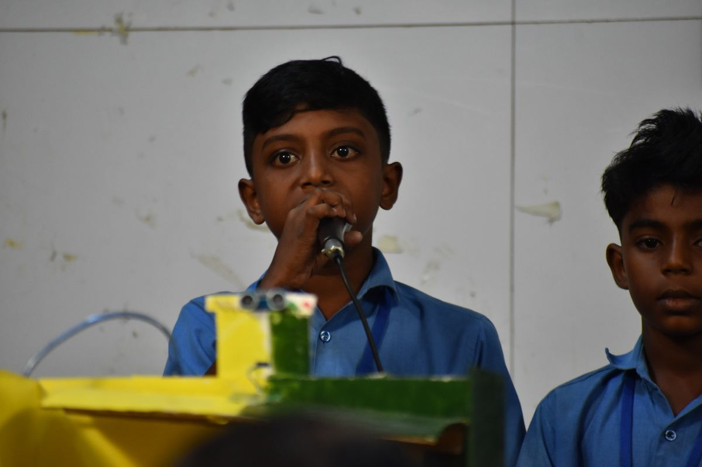
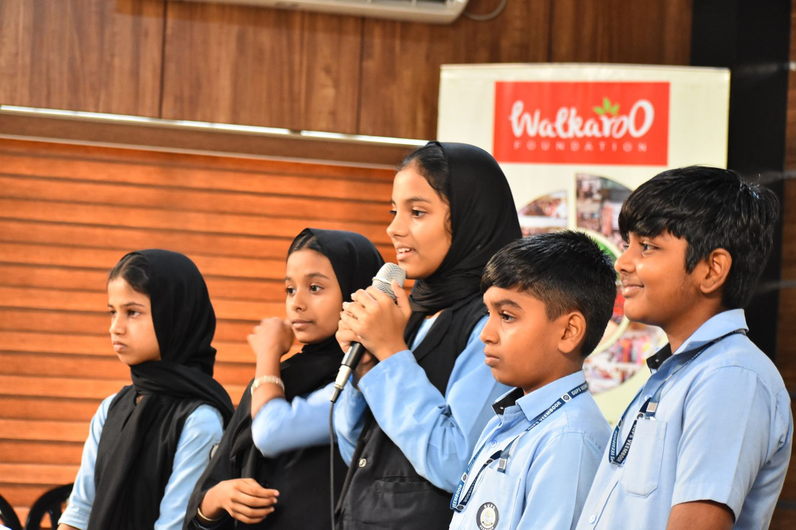
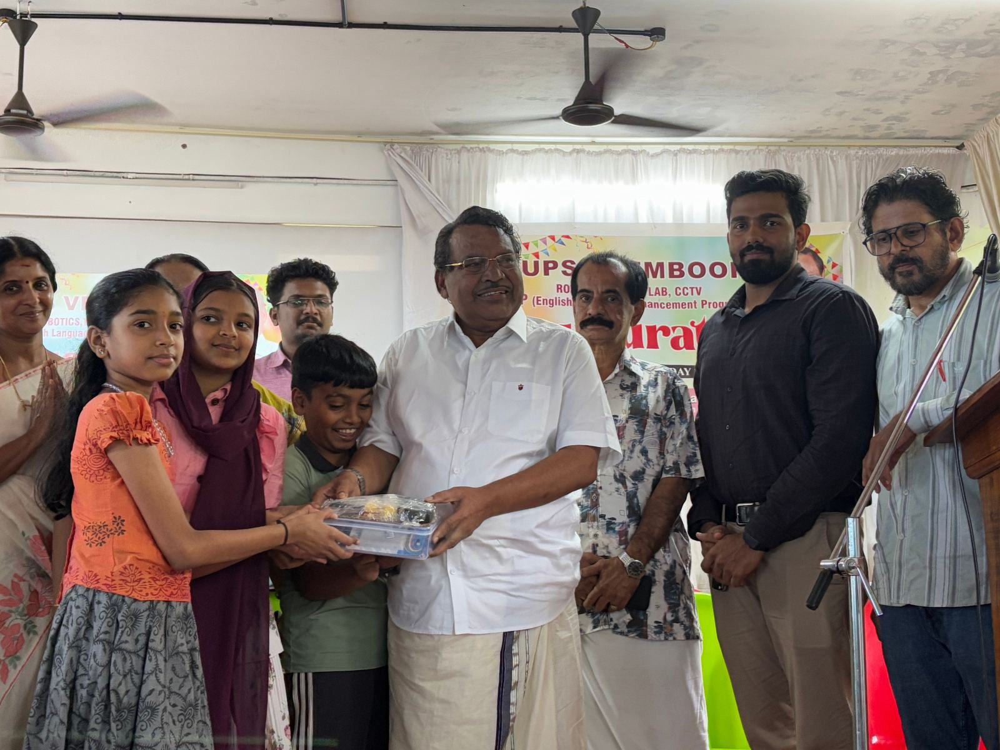
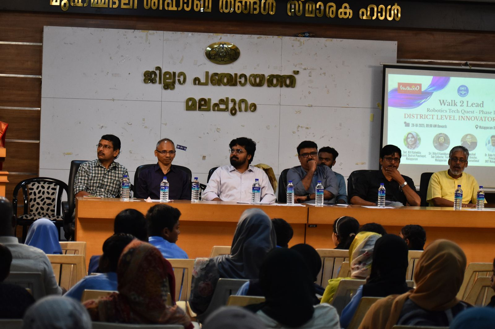
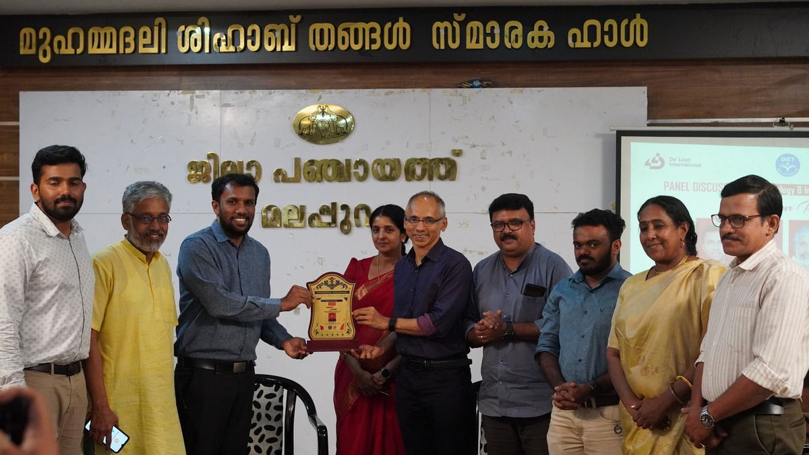
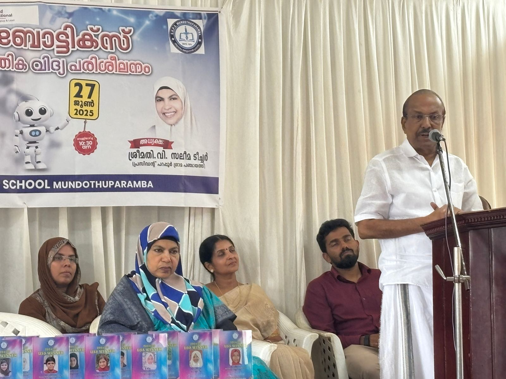
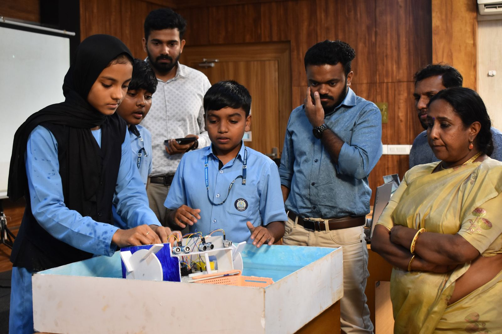
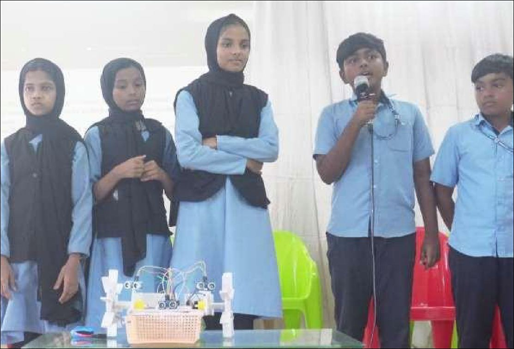

One school in Kozhikode. Now three districts, running at once.
Kinalur GUPS was a single pilot in 2023. Walk2Lead has since reached Kozhikode, Malappuram, Wayanad and Kannur, expanding with every phase.








The pilot nobody had to renew
One school, 48 students, no track record to point to. De' Lead ran the full 30-session curriculum anyway, taking students from electronics to a working prototype, presented by 12-year-olds. It was enough to take the programme into a second district next.
16 schools, 480 students: the first real test of the system
Two districts at once meant real operational strain: shared laptops, patchy power, schools running in parallel across both. The programme still delivered a documented 92.99% average attendance, tracked school-by-school, not estimated.
Proving it wasn't a one-district fluke
3 schools, 90 students, including DIET's own Lab School in Palayad, with the academic partner trusting the programme inside its own training ground.
24 schools, 705 students, and a jump to the international stage
The largest phase yet. Twelve students from this cohort were selected for the international Zero2Entrepreneur 2025 Bootcamp: 5 from Kozhikode, 7 from Malappuram, held 28 Nov–4 Dec 2025. Government-school kids from Phase 4, on a global startup stage.